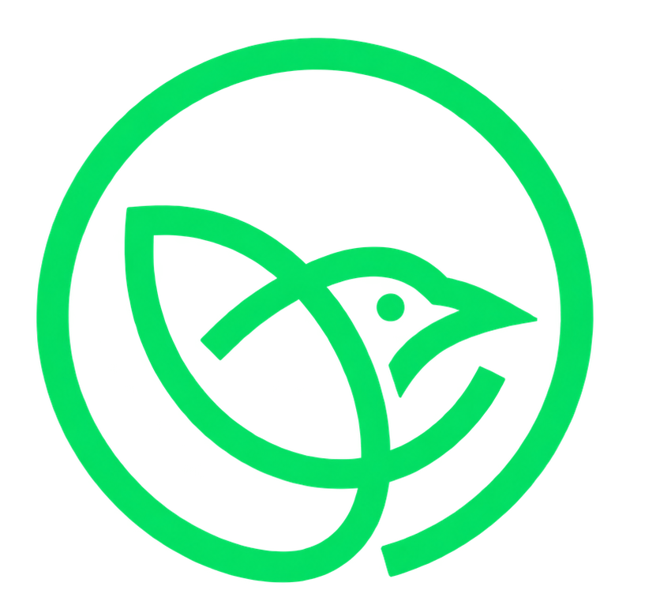
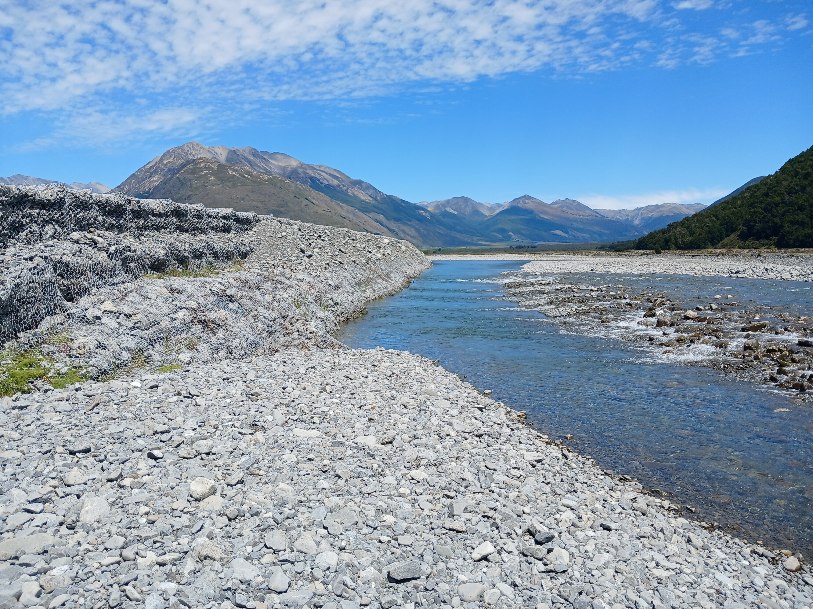
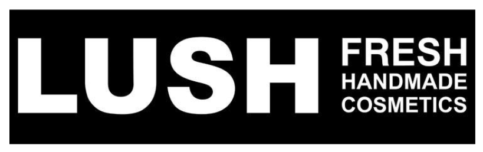
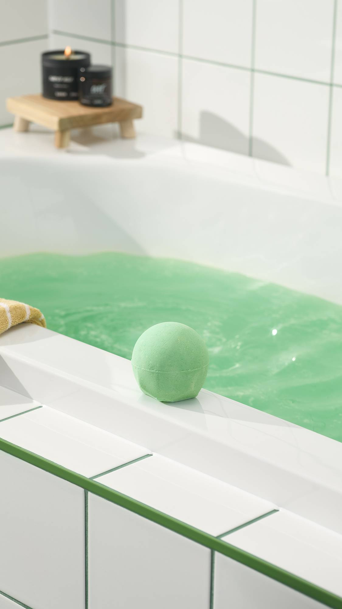
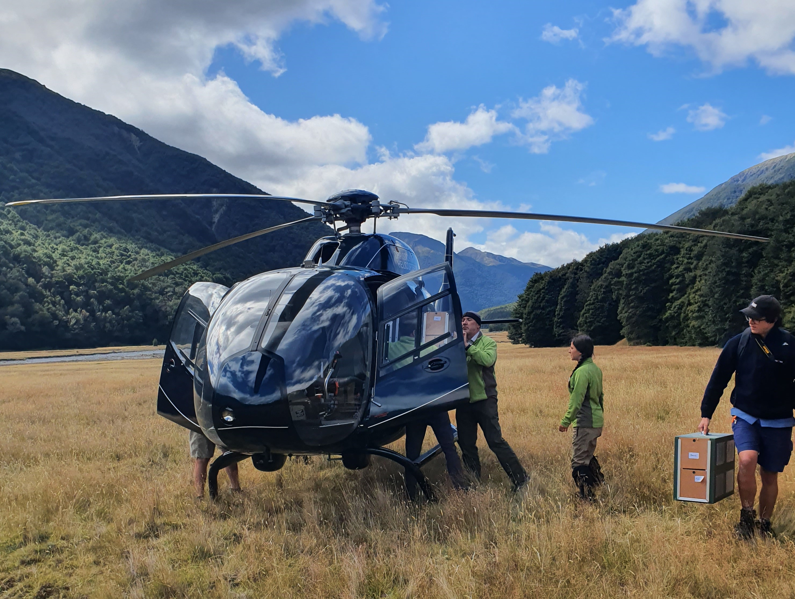
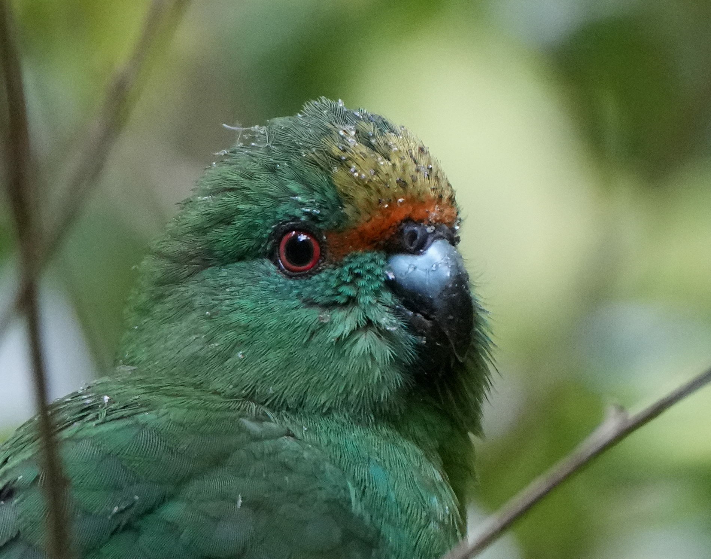

Research.
Ecology, avian perception, nutrition and behaviour. A shared question, careful observation and independent welfare review.

Discover the Partnership
THE PROGRAMME
OCES brings ecological understanding, responsible design and sustained habitat support together. Partnerships extend the skills and resources available to our national wildlife recovery mission.
Ecology, avian perception, nutrition and behaviour. A shared question, careful observation and independent welfare review.
Material knowledge, construction methods and prototyping. Species-specific fit, movement and signalling guide every brief.
Restoration, site stewardship and monitoring. Feeding and nesting places remain part of every recovery pathway.
Each partnership defines its contribution, sets a research brief and reviews findings against agreed milestones. OCES shares progress, limitations and how resources are used. The species remains at the centre of the work.
A NEW PARTNERSHIP / 2095

Project EROS Phase II
is supported by LUSH.
Funding advances research into scent, material interaction and species-specific courtship signals.
WHY WE WORK TOGETHER

A kinder ritual.
A greater responsibility.
Lush believes that care should travel beyond the bathroom, into the living world we all share. Supporting OCES is an expression of that belief: an investment in knowledge, thoughtful design and the future of endangered species.
Through Project EROS Phase II, Lush brings its formulation and material expertise to a wider purpose. Together, we are turning everyday care into lasting possibilities for avian life.
Care for yourself. Care for the world that makes care possible.

Lush contributes formulation and material expertise, while OCES guides the species brief, welfare criteria and independent research. Bird-safe materials, protected habitats and careful design are shared commitments across the partnership.
Our ambition is simple: make care part of every decision. With sustained support for research and conservation, we work towards a future in which both people and birds can thrive.
WHAT LUSH SUPPORTS
Phase II expands Project EROS beyond visual design. It begins with research questions, rather than assumptions about what attracts a bird.
Investigate whether scent carries relevant information for each species, and how it interacts with established visual and behavioural signals.
Study texture, residue and movement. Explore ultra-fine technical weaves, soft contact surfaces and restrained iridescence within a species-specific material brief.
Observe recognition, display and pair formation. Develop evidence for each species before expanding an intervention.
Human fragrance expertise informs the research. Any avian application requires its own welfare assessment and evidence.
SPECIES / PROGRAMMES
Cyanoramphus malherbi
The species at the heart of OCES’s first conservation programme. Its Bird Lingerie is formally in use in 2095 after repeated experiments and testing.
Phase II studies how scent and material behaviour relate to the species’ own courtship signals, while keeping beech-forest food availability within the conservation brief.
The Great Tit, Atlantic Puffin and Golden-headed Quetzal remain separate design and research briefs. Findings from one species will not automatically be treated as evidence for another.
Explore the species research
IMPACT SO FAR / 2095
The partnership has just begun. Its first contribution is support for a new research phase and a co-branded collection. Long-term ecological recovery remains ahead.
Orange-fronted Parakeet Bird Lingerie entered formal use before this partnership. Existing programme outcomes are not claimed as results of Lush funding. Phase II has no published recovery or courtship-success figures yet.
THE COLLABORATION COLLECTION
Discover the LUSH × OCES collection.
Created to support the next questions in Project EROS.
Opening the EROS collection